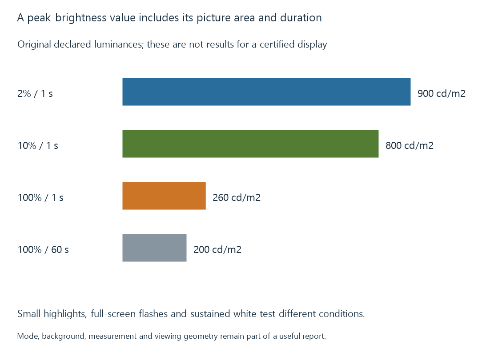

Display peak brightness
Display peak brightness is a luminance result that needs a defined picture area, duration, mode and measurement context.
A display’s peak brightness describes a maximum luminance reached under some conditions. The conditions are part of the number.
For a movie highlight, a small bright region may be relevant. For a long bright snow scene, a larger area and sustained output are relevant. Neither measurement automatically replaces the other.
Area, duration and mode belong beside the result
A useful luminance description identifies:
- The size and location of the bright region.
- The rest of the picture’s brightness.
- How long the region has been displayed.
- The display’s selected picture, power and signal mode.
- The measurement method and viewing geometry.
A nit is one cd/m². This is a luminance unit, not a video code value, a lumen figure or an electrical power measurement.
VESA’s current DisplayHDR criteria distinguish small-patch, full-screen flash and full-screen long-duration tests. The standard’s own pattern definitions should accompany its certification results.
Four invented observations
The following is an original teaching table, not a measurement of a TV:
| Bright region | Observation time | Declared luminance |
|---|---|---|
| 2% of screen | 1 second | 900 cd/m² |
| 10% of screen | 1 second | 800 cd/m² |
| Full screen | 1 second | 260 cd/m² |
| Full screen | 60 seconds | 200 cd/m² |

Calling this model simply a “900-nit display” would hide its full-screen and sustained conditions. Calling it a “200-nit display” would hide its small-highlight capability.
Automatic brightness limiting develops one reason those conditions can change the available output. Other display processing and power policies can also participate.
The target affects highlight mapping
An Emby playback path adapting HDR content needs a useful description of the destination. A source mastering peak is information about the source’s creation context; it is not a measurement of the current display.
Likewise, peak-luminance detection estimates or reads content properties. It does not measure the panel’s present physical luminance.
Using a small-patch maximum as though it were a full-screen sustainable target can give an incomplete account of a bright scene. A mapping and display controller may then adapt the result further.
White is only one output color
The maximum white luminance does not specify the maximum luminance of every saturated color. The color-producing arrangement and permitted drive define a broader color-volume relationship.
Black level also needs its own simultaneous-picture context. Dividing the highest white from one test by the lowest black from an unrelated test can describe a different condition from the contrast surrounding a movie highlight.
See Also
- HDR display capabilities
- Automatic brightness limiting
- Projectors and the viewing surface
- Peak-Luminance Detection for Tone Mapping